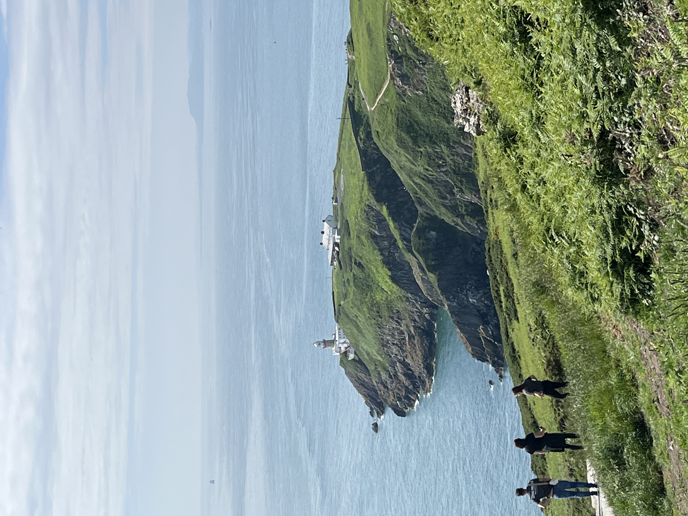
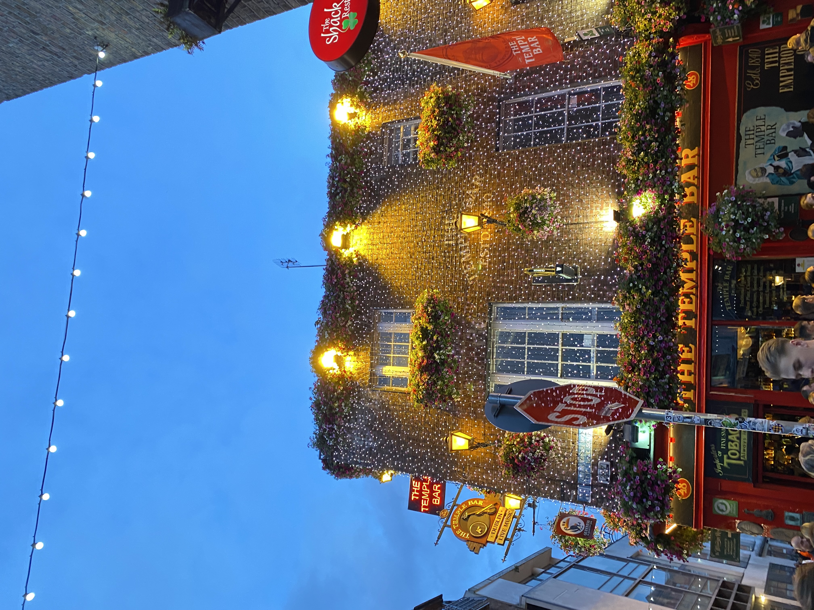
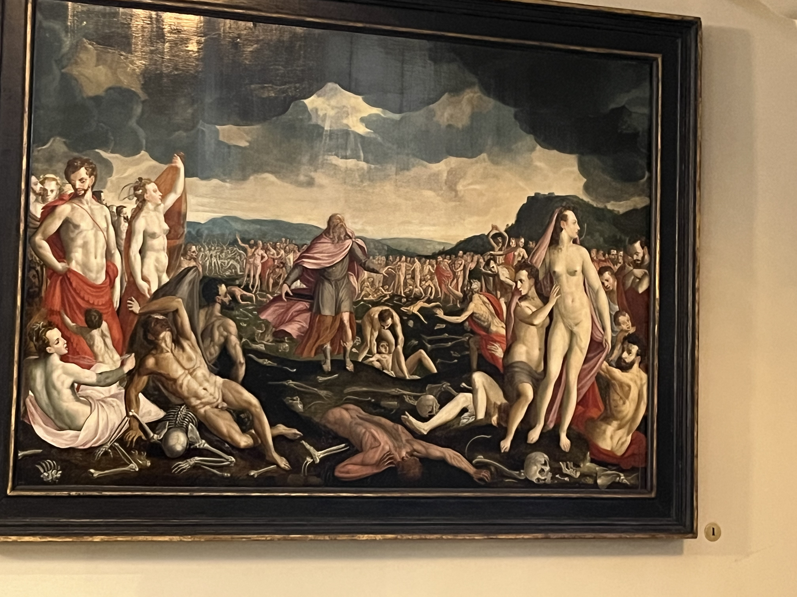
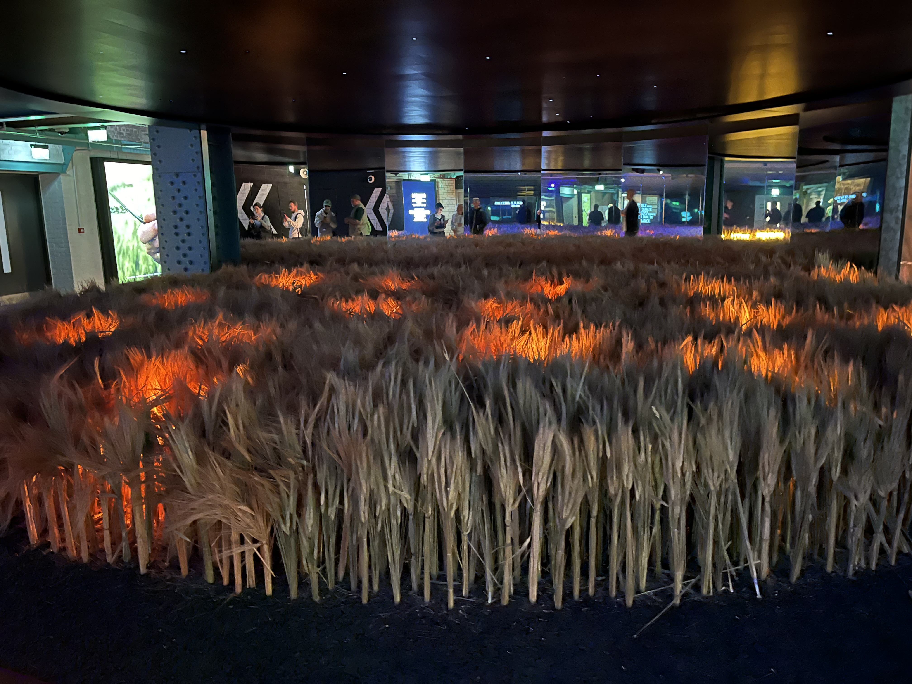
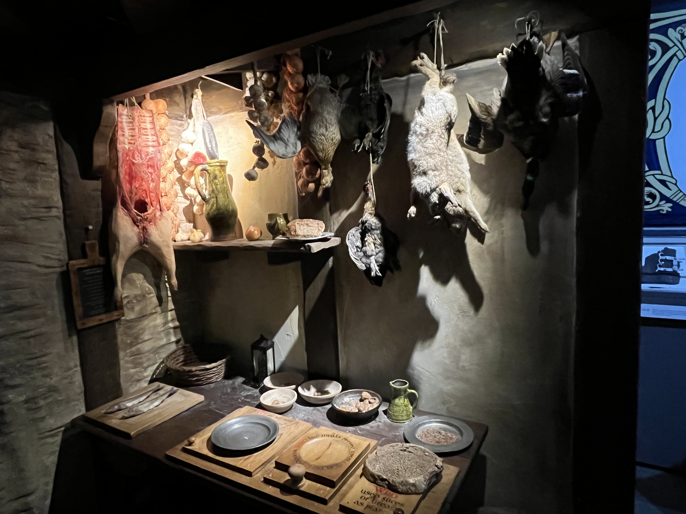

Visits

St Sefen's green
Trinity College & Old library

Dublin Center

Howth's cliffs and village

National Botanic Garden

Temple bar

Dublin Castle

Guiness Storehouse

Dublina / Viking Museum

National Gallery of Ireland

Santry park

Famine memorial